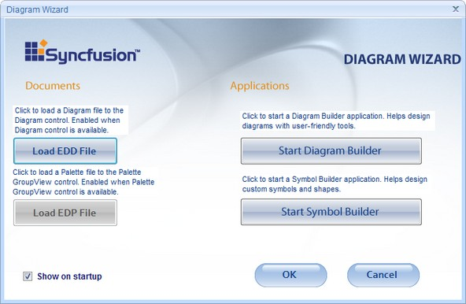
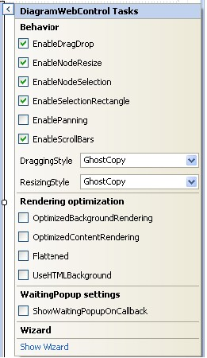
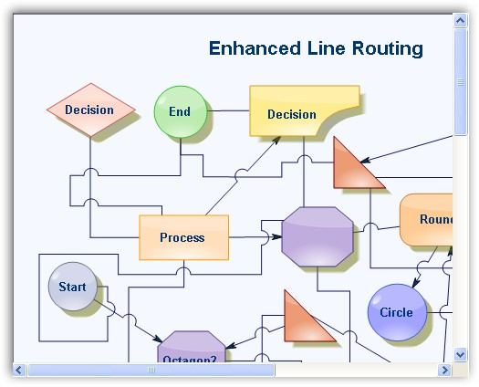

The core of the Essential Diagram Web framework is the Syncfusion.Web.UI.WebControls.Diagram.DiagramWebControl class. The DiagramWebControl is a subclass of the System.Web.UI.WebControls.WebControl type, and implements an ASP.NET DiagramWebControl that allows static and interactive diagrams to be created and rendered to a web page. The DiagramWebControl uses the same base architecture as used by the Windows Diagram Control and can thus avail itself, the rich Essential Diagram object model. This common architecture, in addition to lending the DiagramWebControl, offers higher reliability, ease of use, and the added advantage of allowing developers to harness the comprehensive symbol and diagram building utilities featured in the Windows version of the product. Seamless sharing of the diagram document between the Windows and Web controls, make it possible to develop highly specialized diagramming applications that bridge the two domains.
The DiagramWebControl comprises of the Essential Diagram Model (Syncfusion.Windows.Forms.Diagram.Model) class that implements the Diagram object model, and the Essential Diagram View (Syncfusion.Windows.Forms.Diagram.View) class that manages the visual transformation of the diagram model. The control renders the diagram on the client Web Browser as HTML by using the IMG element for drawing the diagram, augmented with a client-side image map and JavaScript for supporting user interactivity with the diagram.
Drag the DiagramWebControl onto the web page. This will open the Diagram Wizard window.

Figure 10: Diagram Wizard
If you have diagram file *.edd, click the Load EDD File button, to find your *.edd file and run the application. This will display your diagram file in the DiagramWebControl. Also you can start Diagram Builder or Symbol Builder application.
Diagram builder is a very powerful application for creating different diagram documents. Symbol Builder enables you to create palettes and save them as *.edp files. If you do not want to start the diagram wizard after dragging the DiagramWebControl onto the web page every time, select Show on startup option displayed in the diagram wizard. Click Ok, and then click Cancel, to view the DiagramWebControl on your web page.
Click on the DiagramWebControl to view the DiagramWebControl properties.
Before running the application, you must add the following http handler in the Web.config file.
|
[ASPX]
<add verb="*" path="ImgRequest.ashx" type="Syncfusion.Web.UI.WebControls.Diagram.NodeRenderHandler, Syncfusion.Diagram.Web, Version=X.X.X.X, Culture=neutral, PublicKeyToken=3d67ed1f87d44c89"/> |
 Note: X.X.X.X in the above code corresponds to the
correct version number of the Essential Studio version that you are currently
using.
Note: X.X.X.X in the above code corresponds to the
correct version number of the Essential Studio version that you are currently
using.
DiagramWebControl provides standard properties for drag-and-drop, node resize, node selection, selection rectangle, panning and scroll bars.
DiagramWebControl also provides support to change the dragging style and resizing style of nodes. It includes the following options.
· GhostCopy
· Original
· DashedOutline
· TransparentRectangle
· None

Figure 11: DiagramWebControl Properties

Figure 12: DiagramWebControl